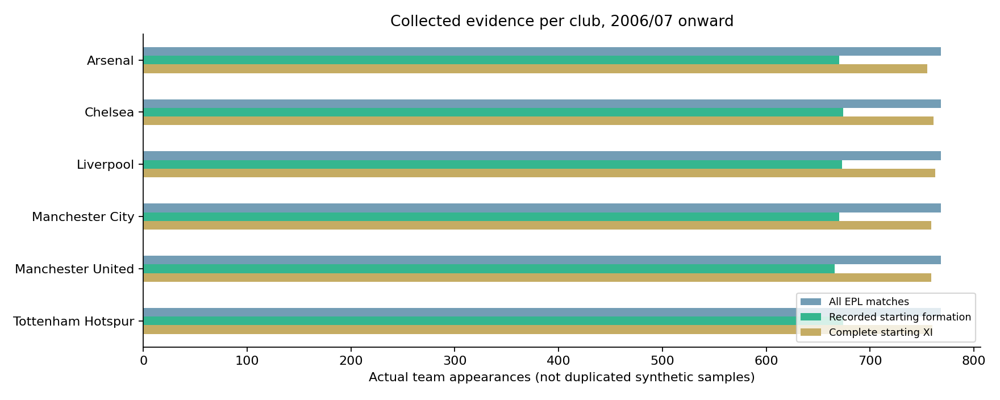

유명 6개 구단 집중 분석
구단별 실제 경기·선발 기록 수를 따로 집계했습니다. 대형별 승률은 관측된 성적이며 최적 전술의 효과가 아닙니다.
2024/25 이후는 이번 튜닝에 사용하지 않았지만 이전 실험에서 이미 본 평가 기간입니다. 별도의 미래 검증이 필요합니다.
수집한 자료의 양과 누락

| 구단 | 전체 경기 | 포메이션 있음 | 선발 11명 있음 | 시작 | 종료 |
|---|
상대팀 전체 리그 결과는 상대 강도 계산의 문맥 자료이며, 지도학습 정답은 선택한 6개 구단만 사용합니다. 없는 대형·선발·부상 기록을 추정해 채우지 않았습니다.
오래된 선수단·감독의 경기는 현재 팀의 경기와 동등하지 않습니다. 학습에는 최근 자료에 더 높은 가중치(반감기 3년)를 줬으므로 원시 경기 수 전체가 현재 전술의 유효 표본 수인 것은 아닙니다.
구단별 평가
| 모델 | 정확도 | 로그손실 ↓ |
|---|
실제 포메이션 사용 기록
과거 전체 관측 성적입니다. 상대·감독·선수단 조건을 통제한 인과 비교가 아닙니다. 최근 사용은 마지막 730일입니다.
| 대형 | 전체 사용 | 최근 사용 | 승률 | 평균 승점 |
|---|
같은 평가 경기의 전체 결과
| 모델 | 정확도 | 로그손실 ↓ | Brier ↓ |
|---|
6개 구단 간 맞대결의 두 관점은 각각 0.5 가중치로 합계 1경기만 반영합니다. 유명 구단의 기본 승률이 높으므로 항상 해당 구단 승리 기준과 비교해야 합니다.
Random Forest 하이퍼파라미터 튜닝
후보 간 비교는 시간순 검증 로그손실로 결정했습니다. 테스트 정확도를 보고 설정을 다시 고르지 않았습니다.
검증에서 좋은 RF 설정 상위 8개
| 시도 | 트리 | 깊이 | 말단 최소 | 특성 비율 | 검증 로그손실 |
|---|
어떤 정보가 들어갔는가
경기 전까지의 최근 5·10·20경기 승점·득실점·슈팅·유효슈팅·점유율·코너킥·파울·카드·패스·크로스·롱볼·태클·가로채기·선방·블록, Elo, 일정·휴식, 홈·원정별 경기력, 발표된 선발 구성과 이전 관측 선수 기록, 대형 구조·변경·사용 빈도를 사용합니다.
해당 경기의 득점·경기 통계·선수 생산성과 배당은 정답 또는 이후 이력 갱신에만 사용합니다. 부상·징계·선수 능력·감독 데이터는 확보한 것으로 취급하지 않습니다.
검증 구간의 변수 중요도
학습에서 고른 30개 열을 검증 구간에서 섞어 로그손실 증가를 측정했습니다. 전술의 원인이나 인과 효과를 뜻하지 않습니다.
| 입력 열 | 검증 손실 증가 |
|---|
재현 가능한 결과 파일
분석 요약 · 구단별 결과 CSV · 시즌별 수집 범위 · 대형 사용 기록 · 전체 지표
포메이션 포함 전체 튜닝 · 제외 전체 튜닝 · 선택 설정 · 변수 중요도